Big Orange Crayonmusical thingsTizzy, The Hype, Radio Vago and Ted Leo/Pharmacists The Flywheel, Eastampton, MA August 17th, 2002 This was a great show and oh my lord was it hot in there. It was a very smelly car ride home, but at least the Flywheel is non-smoking so we didn't smell as bad as we could have. Pictures: Tizzy 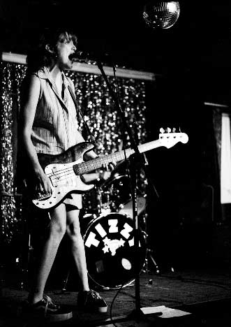 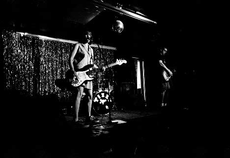 The Hype 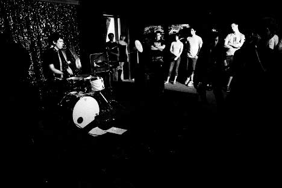 Radio Vaga 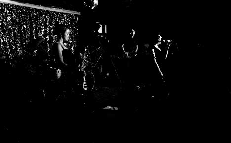 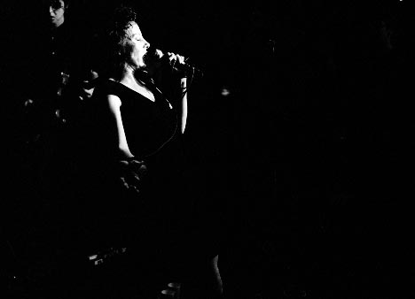 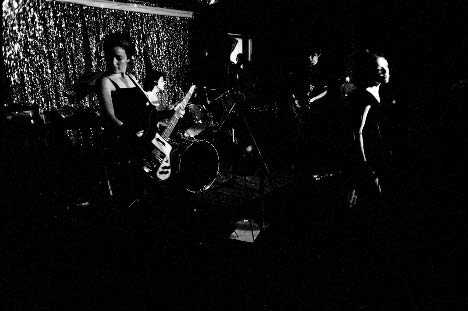 Ted Leo/Pharmacists 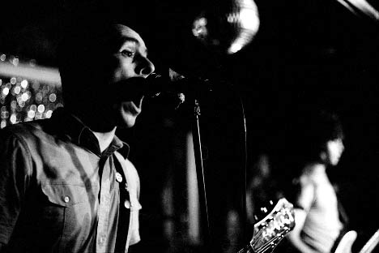 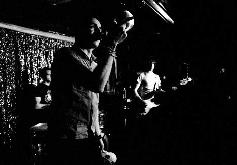 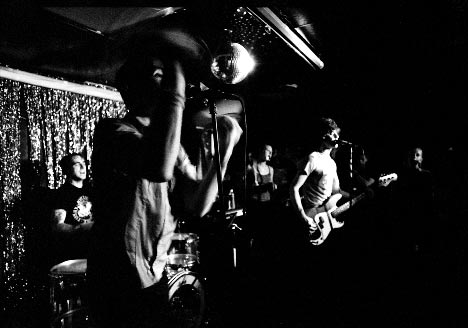 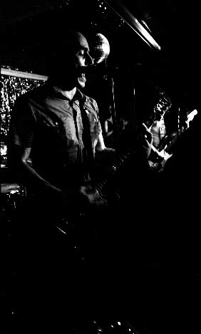 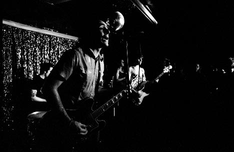 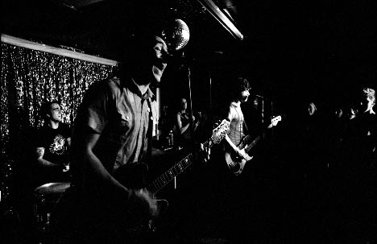 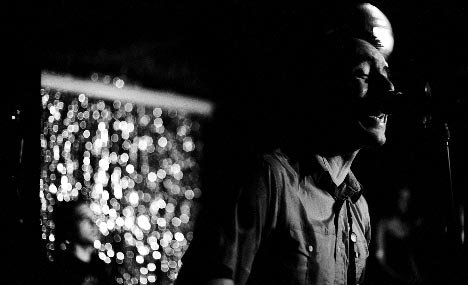 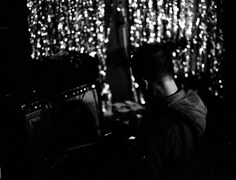 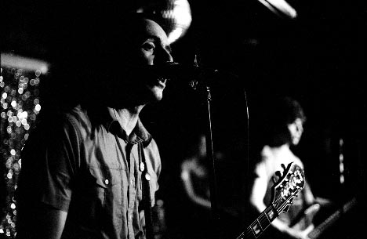 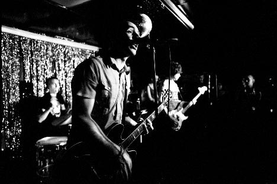 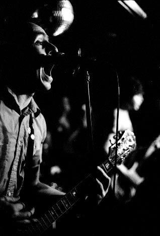 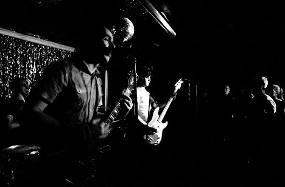 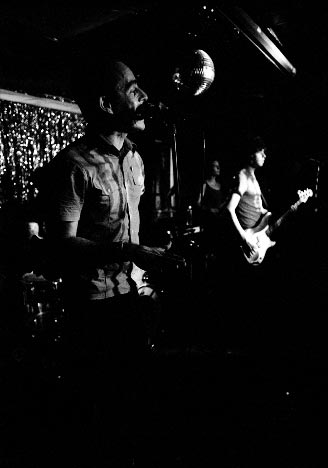 Camera stuff: Body: Nikon FM2n Lenses: 50mm f/1.4, 105mm f/2.5 and 24mm f/2.8 Nikkors Film: Fuji Neopan 1600 exposed at 3200, developed in Microphen for 6 minutes at 21 degrees with a one minute water bath Please don't use these elsewhere unless you are in one of the bands or are a nice person. |